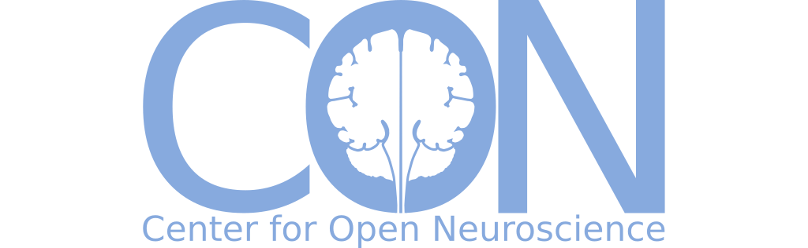

ORINOCO / ORINOCO Lite · US-RSE 2026
Beyond the Lab WebsiteReusing Structured Research Metadata
Across Lab Operations

Who works on which project, and what has it produced? Labs repeatedly assemble these facts for websites, grants and reports. ORINOCO makes them a shared collection of structured, connected records that people, software and AI tools can use.
Deploy with dedicated services, or use our GitHub-based model with no services for your lab to deploy.We compare two ways to run the same metadata approach: the service deployment at Psychoinformatics and ORINOCO Lite at the Center for Open Neuroscience (CON).
1 · Dedicated services
ORINOCO
 ORINOCO video
ORINOCO video
Developed by Michael Hanke and colleagues at Psychoinformatics, INM-7, Forschungszentrum Jülich, ORINOCO brings together tools for maintaining connected research information using dedicated services.

 ORINOCO
ORINOCO

Psychoinformatics
Connected research information, presented as a group website.
 Visit the site
Visit the site
2 · GitHub-based deployment
ORINOCO Lite at CON
Developed and used by CON, ORINOCO Lite brings the same approach to GitHub. Labs can edit, review and reuse their research information without deploying services.

 ORINOCO Lite
ORINOCO Lite


Center for Open Neuroscience
The GitHub deployment, used for CON’s development website.
 Visit the site
Visit the site

Shared by both deployments
A shared structure,
an approachable editor
Describe people, projects and publications using a common data model. Forms guide contributions and validation helps keep records consistent.
The model generates the form, so contributors work with familiar fields while maintaining structured metadata.
3 · Local use, global connections
Useful in the lab.
Connected beyond it.
Both deployments maintain information where a group knows it best, and describe it in ways that other tools and organizations can understand.
Within a group: collect once, reuse
Connect people, projects, publications and datasets. Websites, reports and queries can draw on the same records and their relationships.

Local knowledge,
shared meaning
Ontologies give records shared meanings, helping information maintained by individual groups connect across organizations and systems.
Shared identifiers
Structured context for AI
Explicit fields, identifiers and relationships give AI tools a clearer structure to work with: answering questions, checking records and proposing updates.